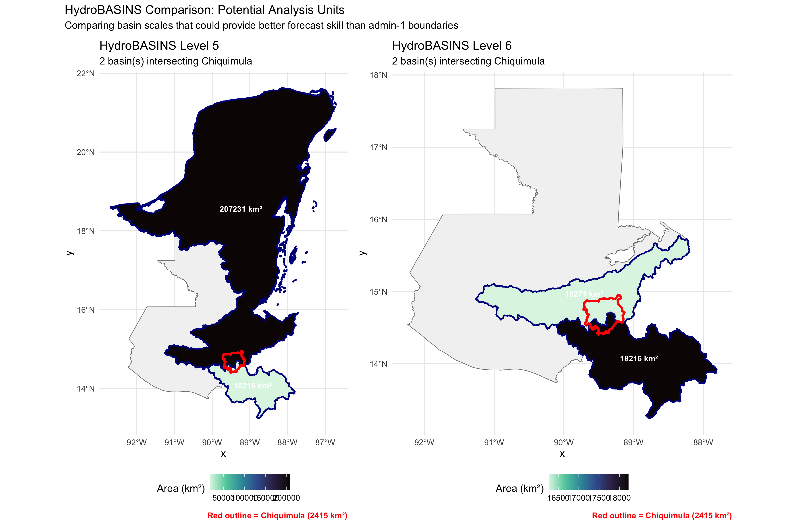

Drought is defined using a return period of 4 years (RP4):
Approximately 6 drought years expected over the 25-year baseline (2000-2024)
Threshold calculated separately for each forecast model and observation source
This aligns with typical anticipatory action trigger frameworks
A.2 Observation Sources
Source
Type
Coverage
Used For
ERA5
Global reanalysis
Global
SEAS5 native validation
ENACTS
Satellite + stations
Regional
Operational standard for Guatemala
CHIRPS
Satellite + stations
Quasi-global
Independent validation
A.3 Key Metrics Glossary
F1 Score: Harmonic mean of precision and recall. Balances false alarms and missed events.
ROC-AUC: Area under the receiver operating characteristic curve. Measures discrimination skill - can the forecast distinguish drought from non-drought years?
Spearman correlation: Rank-based correlation. Do wetter forecasts correspond to wetter observations?
Inter-leadtime correlation: Do consecutive leadtimes agree with each other? A data quality check.
Coefficient of Variation: How much do forecasts vary relative to their mean? Forecasts that barely vary contain no useful signal.
A.4 Archived: Exploring Larger Spatial Scales
NoteHistorical Context
This analysis was initiated early in the research process, following the binary classification metrics assessment. The hypothesis was that seasonal forecasts might perform better when aggregated over larger spatial scales than administrative boundaries. However, as the investigation progressed through continuous metrics, multi-source validation, and internal consistency diagnostics, the root cause of poor Postrera skill became clear: the INSIVUMEH forecasts themselves lack signal, regardless of spatial aggregation. This section is retained for completeness but was not pursued further.
Both SEAS5 and INSIVUMEH may perform poorly at the admin-1 (Chiquimula) scale because seasonal forecasts typically have better skill at larger spatial scales. HydroBASINS provides standardized watershed boundaries at multiple levels that could serve as alternative analysis units.
Load HydroBASINS and Chiquimula boundary
library(tidyverse)library(sf)library(cumulus)# Disable s2 for this section (HydroBASINS has some geometry issues with s2)sf_use_s2(FALSE)# Load Guatemala boundariessf_gtm_adm0 <- cumulus::download_fieldmaps_sf(iso3 ="GTM", layer ="gtm_adm0")$gtm_adm0sf_gtm_adm1 <- cumulus::download_fieldmaps_sf(iso3 ="GTM", layer ="gtm_adm1")$gtm_adm1 |> janitor::clean_names()sf_chiquimula <- sf_gtm_adm1 |>filter(adm1_pcode =="GT20")# Path to HydroBASINS datahybas_dir <-"../../data/hybas_na_lev01-12_v1c"# Load levels 5 and 6sf_hybas_5 <-st_read(file.path(hybas_dir, "hybas_na_lev05_v1c.shp"), quiet =TRUE)sf_hybas_6 <-st_read(file.path(hybas_dir, "hybas_na_lev06_v1c.shp"), quiet =TRUE)# Ensure same CRSsf_chiquimula <-st_transform(sf_chiquimula, st_crs(sf_hybas_5))# Get bounding box of Chiquimula with buffer for contextchiq_bbox <-st_bbox(sf_chiquimula)bbox_buffer <-1# degrees# Create bbox polygon for filteringbbox_poly <-st_as_sfc(st_bbox(c(xmin =as.numeric(chiq_bbox["xmin"]) - bbox_buffer,xmax =as.numeric(chiq_bbox["xmax"]) + bbox_buffer,ymin =as.numeric(chiq_bbox["ymin"]) - bbox_buffer,ymax =as.numeric(chiq_bbox["ymax"]) + bbox_buffer), crs =st_crs(sf_hybas_5)))# Filter basins to region around Chiquimula using intersectionsf_hybas_5_region <- sf_hybas_5[st_intersects(sf_hybas_5, bbox_poly, sparse =FALSE)[,1], ]sf_hybas_6_region <- sf_hybas_6[st_intersects(sf_hybas_6, bbox_poly, sparse =FALSE)[,1], ]# Find basins that intersect Chiquimulasf_hybas_5_intersect <- sf_hybas_5_region[st_intersects(sf_hybas_5_region, sf_chiquimula, sparse =FALSE)[,1], ]sf_hybas_6_intersect <- sf_hybas_6_region[st_intersects(sf_hybas_6_region, sf_chiquimula, sparse =FALSE)[,1], ]cat("Level 5 basins intersecting Chiquimula:", nrow(sf_hybas_5_intersect), "\n")
Map comparing basin levels 5 and 6 over Chiquimula
library(patchwork)# Calculate areas for labelssf_hybas_5_intersect <- sf_hybas_5_intersect |>mutate(area_km2 =as.numeric(st_area(geometry)) /1e6)sf_hybas_6_intersect <- sf_hybas_6_intersect |>mutate(area_km2 =as.numeric(st_area(geometry)) /1e6)chiq_area <-as.numeric(st_area(sf_chiquimula)) /1e6# Transform admin0 to match CRSsf_gtm_adm0_t <-st_transform(sf_gtm_adm0, st_crs(sf_hybas_5))# Create base plot functioncreate_basin_map <-function(sf_basins, level, sf_admin, sf_country) {# Get centroids for labels basin_centroids <-st_centroid(sf_basins) |>mutate(x =st_coordinates(geometry)[,1],y =st_coordinates(geometry)[,2] )ggplot() +geom_sf(data = sf_country, fill ="grey95", color ="grey50", linewidth =0.3) +geom_sf(data = sf_basins, aes(fill = area_km2), color ="darkblue", linewidth =0.8) +geom_sf(data = sf_admin, fill =NA, color ="red", linewidth =1.2) +geom_sf_text(data = basin_centroids,aes(label =paste0(round(area_km2), " km²")),size =3, fontface ="bold", color ="white" ) +scale_fill_viridis_c(option ="mako", direction =-1, name ="Area (km²)") +labs(title =paste0("HydroBASINS Level ", level),subtitle =paste0(nrow(sf_basins), " basin(s) intersecting Chiquimula"),caption =paste0("Red outline = Chiquimula (", round(chiq_area), " km²)") ) +theme_minimal() +theme(legend.position ="bottom",plot.caption =element_text(color ="red", face ="bold") )}p_lev5 <-create_basin_map(sf_hybas_5_intersect, 5, sf_chiquimula, sf_gtm_adm0_t)p_lev6 <-create_basin_map(sf_hybas_6_intersect, 6, sf_chiquimula, sf_gtm_adm0_t)p_lev5 + p_lev6 +plot_annotation(title ="HydroBASINS Comparison: Potential Analysis Units",subtitle ="Comparing basin scales that could provide better forecast skill than admin-1 boundaries" )

Code
# Summary comparisontibble(`Spatial Unit`=c("Chiquimula (Admin-1)",paste0("Level 5 (", nrow(sf_hybas_5_intersect), " basin", ifelse(nrow(sf_hybas_5_intersect) >1, "s", ""), ")"),paste0("Level 6 (", nrow(sf_hybas_6_intersect), " basin", ifelse(nrow(sf_hybas_6_intersect) >1, "s", ""), ")") ),`Total Area (km²)`=c(round(chiq_area),round(sum(sf_hybas_5_intersect$area_km2)),round(sum(sf_hybas_6_intersect$area_km2)) ),`Mean Basin Area (km²)`=c(round(chiq_area),round(mean(sf_hybas_5_intersect$area_km2)),round(mean(sf_hybas_6_intersect$area_km2)) ),Notes =c("Current analysis unit","Larger basins - may have better forecast skill","Medium basins - balance of skill and resolution" )) |> knitr::kable(caption ="Comparison of spatial units for forecast skill assessment")
Comparison of spatial units for forecast skill assessment
Spatial Unit
Total Area (km²)
Mean Basin Area (km²)
Notes
Chiquimula (Admin-1)
2415
2415
Current analysis unit
Level 5 (2 basins)
225446
112723
Larger basins - may have better forecast skill
Level 6 (2 basins)
34487
17243
Medium basins - balance of skill and resolution
A.4.1 Original Interpretation
Level 5 provides larger drainage basins that may better match the spatial resolution at which seasonal forecasts have skill
Level 6 offers a middle ground between admin boundaries and larger regional basins
This avenue was not pursued further after the internal consistency analysis (Chapter 5) revealed that the INSIVUMEH Postrera forecasts lack meaningful signal at any spatial scale.